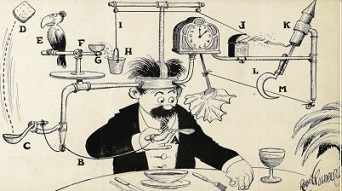

Wat is een Rube Goldberg Machine?
Een Rube Goldbergmachine is een bij voorkeur zo complex mogelijk
apparaat dat een héél eenvoudige handeling d.m.v. een bij voorkeur zo
omslachtig mogelijke kettingreactie uitvoert, en daar bij voorkeur zo
lang mogelijk over doet. Anders gezegd: toppunt van ondoelmatigheid,
en tegelijkertijd van creativiteit.
Genoemd naar cartoonist Rube Goldberg die een dergelijke constructie
voor een cartoon bedacht:
het zelfstandig vegende servet.
